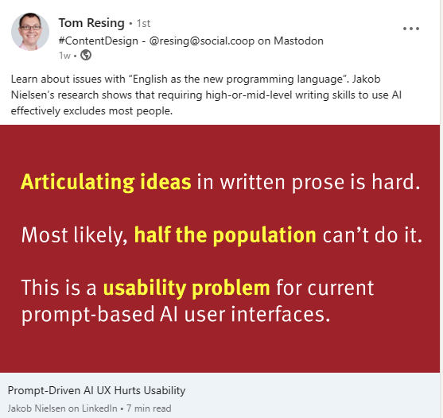

Projected User Experiences via Generative AI
This site is about my personal exploration of all sorts of applied AI. I am not a data scientist or mathematician, and I have never been a computer scientist. I design and build systems that bring all sorts of technology and people together. I take joy in learning new things and applying my knowledge to help others.
If you look through what I’ve written on this site so far, you’ll see speech recognition (text from speech), image generation (images from text), and text generation (text from text) topics all mixed together with ways of using them in the cloud and locally. A common subtext is the topic of user experience (UX) where I am the user, but I am really interested in learning from these experiences to make new user experiences for other people as part of my art.
Interesting Perspectives from Respectable Experts
I recently saw a post from Tom Resing on LinkedIn titled Prompt-Driven AI UX Hurts Usability:

Jakob Nielsen is an undeniable authority on usability and so I eagerly read the article Tom shared and you should too! I learned a few things and it otherwise re-enforced one thing I already believed text only experiences are not good fit for a significant percentage of people.
In this respect, text only experiences are similar to most of the software ever produced. In fact, it is similar in this respect to almost every experience (text only or otherwise) ever conceived. Software is hard for you to use because you aren’t a strong reader and writer? Well,
- Some people can’t read the menu at the local restaurant because they can’t see
- Some people can’t read the menu at the local restaurant because they can’t read
- Some people can’t learn from lectures because they don’t hear
- Some people can’t learn from lectures because they can’t understand what is being said
- Some people have mobility issues and can’t participate in activities in locations with lack of access
- Etc…
None of these are a good things and good people do what they can to help others. I try to be a good person.
Dreaming of a Better Future
I think the world would be a better place if media and experiences adapted to people instead of requiring people to do things that they as individuals can’t do for whatever reason. We do our best today. For example, we have braille to help the blind “see” words on a page and RTT/TTY to help the deaf “talk” on the phone. However, what we have today barely scratches the surface when it comes to all the accessibility barriers that exist today.
half of the population in rich countries like the United States and Germany are classified as low-literacy users
This doesn’t mean that half of the population is unintelligent, it means they aren’t good at reading and writing. It should be expected that they won’t find AI based chat to be very helpful for doing complicated things.
Styles of Learning and Thinking
When I was a boy, I often wondered what it is like to be different people. At some point I came to understand that individuals can be very different from each other and that our basic perception varies considerably. We don’t all think or perceive the same way.
Learning Styles and the VARK Model
The VARK model is a learning style theory that categorizes individuals into four main learning styles: Visual, Aural, Reading/Writing, and Kinesthetic. The theory resonates with me. Like many people, my learning styles are Aural and Reading/Writing and according to all the testing they gave me as a child, I’m very good at each. Where visual and kinesthetic learning is concerned, I don’t win any prizes. In fact, I am terrible at remembering people’s faces.
Aphantasia and Anauralia
Aphantasia and anauralia describe modes of thought or rather, the lack thereof. Aphantasia, or mental blindness, is the lack of a mind’s eye. I can relate to the concept of aphantasia because generally, the only time I ever see things in my mind is when I dream. Conversely, anauralia is the lack of an inner-dialog. I can’t imagine what that would be like. I don’t only have an inner-dialog, I have an inner-radio station.
AI for the Betterment of Everyone
Multi-modal AI has the potential to make it possible for system builders to tailor experiences to our individual learning and thinking styles with devices appropriate to the user’s physical abilities. Today, the process of UX design is almost always focused on specific devices and form-factors. We make phone apps, web apps, desktop apps and so on. Accessibility concerns are almost always some sort of bolt-on and are usually an afterthought that many people skip if they can get away with it.
Making big generalizations about software is usually foolish and someone will read this and say ‘well, actually’, but most modern software is intentionally split between a user interface and back-end services. This is true even if the back-end services are one the same device instead of on the internet and the division between the two layers is purely logical. We do this because:
- It makes our software easier to build
- It makes our software easier to maintain
- It makes it easier to reuse components and connect systems to each other
- It makes it easier to build different user experiences for the same system
In fact, big complicated systems often have more than one way to deliver the same experience in different modalities. What I am envisioning here is, conceptually, more of the same and a variation of an old theme, but now we can think about describing the experience in terms of structured prompts and let specialized generative AI create a UX tailored to the individual.
This could translate to:
- Gestures for the kinesthetic
- Speech for the aural
- Structured experiences for the visual
- And so on..
We could project a directed conversational, step by step experienced based on spoken questions and answers for one set of users, a traditional form-based UI for others, and other new modalities for people like Jakob Nielsen to invent. Don’t be confused, the AI is not creative.
Personal AI Assistants, Teachers, and Counselors
Among the oldest and deepest of human fantasies is the idea of an personal counselor that helps the protagonist in ways that the people around them cannot. Whether as a guardian angel, a fairy godmother, or a wise and animated cricket, we love the idea! A recent favorite of mine is the character Dross from Will White’s recently concluded series, Cradle.
It’s fun summer reading if you happen to be that kind of person who thinks that way.
The Friend we Need
What we have today is very far from an assistant who can stop time so we can work through how to survive a fantasy story’s combat scenarios to say the least, and it is a mistake to anthropomorphize it too much (it is a handy analogy at best). What I am talking about are fancy and specialized AI code generators that work against descriptions of experiences - descriptions designed for interpretation so that the generative AI can project the UX in the appropriate modality for the user.
This vision is becoming attainable now and I am incredibly excited and grateful to be here to see it.
--Doug Ware, July 1, 2023